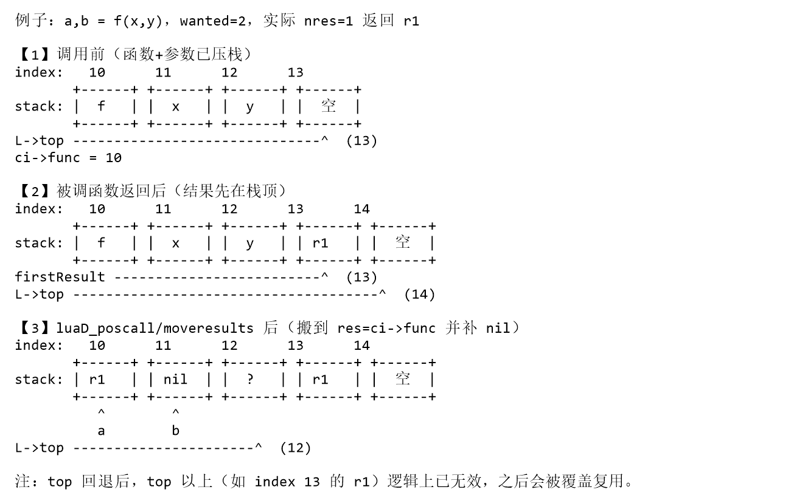
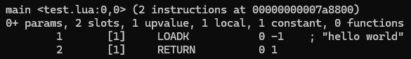
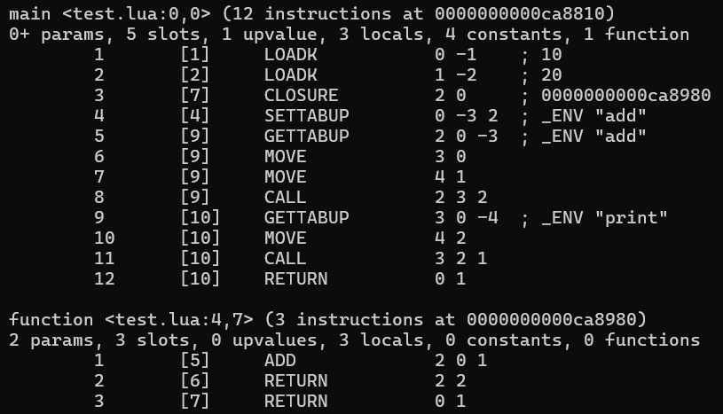

注意事项
- lua的c代码可以分为lua层和c层：
- c层：通常为
lua_XXX()/luaL_XXX() - lua层：每个模块都有自己的名字，如字符串相关就是
luaS_XXX()
- c层：通常为
- lua层API源码都带有LUA_API标识，如：
LUA_API const char *lua_pushlstring (lua_State *L, const char *s, size_t len)
关键数据结构
lua源码中数据结构众多，涉及面广很容易忘记，但是本质上重要的其实并不算太多
lua_State / global_State
启动处：lua_newstate()
lua_State：luaVM线程（执行上下文）
global_State：luaVM共享部分
LUA_API lua_State *lua_newstate (lua_Alloc f, void *ud) {
int i;
lua_State *L;
global_State *g;
LG *l = cast(LG *, (*f)(ud, NULL, LUA_TTHREAD, sizeof(LG)));
if (l == NULL) return NULL;
L = &l->l.l;
g = &l->g;
L->next = NULL;
L->tt = LUA_TTHREAD;
g->currentwhite = bitmask(WHITE0BIT);
L->marked = luaC_white(g);
preinit_thread(L, g);
g->frealloc = f;
g->ud = ud;
g->mainthread = L;
g->seed = makeseed(L);
g->gcrunning = 0; /* no GC while building state */
g->GCestimate = 0;
g->strt.size = g->strt.nuse = 0;
g->strt.hash = NULL;
setnilvalue(&g->l_registry);
g->panic = NULL;
g->version = NULL;
g->gcstate = GCSpause;
g->gckind = KGC_NORMAL;
g->allgc = g->finobj = g->tobefnz = g->fixedgc = NULL;
g->sweepgc = NULL;
g->gray = g->grayagain = NULL;
g->weak = g->ephemeron = g->allweak = NULL;
g->twups = NULL;
g->totalbytes = sizeof(LG);
g->GCdebt = 0;
g->gcfinnum = 0;
g->gcpause = LUAI_GCPAUSE;
g->gcstepmul = LUAI_GCMUL;
for (i=0; i < LUA_NUMTAGS; i++) g->mt[i] = NULL;
if (luaD_rawrunprotected(L, f_luaopen, NULL) != LUA_OK) {
/* memory allocation error: free partial state */
close_state(L);
L = NULL;
}
return L;
}
重点1：g->mainthread = L;
简单理解：g->mainthread可以理解为唯一不变的，lua_newstate()创建出来就是唯一主线程，如需其它线程，通过lua_newthread()创建（携程也是）
重点2：g->seed = makeseed(L);
static unsigned int makeseed (lua_State *L) {
char buff[4 * sizeof(size_t)];
unsigned int h = luai_makeseed();
int p = 0;
addbuff(buff, p, L); /* heap variable */
addbuff(buff, p, &h); /* local variable */
addbuff(buff, p, luaO_nilobject); /* global variable */
addbuff(buff, p, &lua_newstate); /* public function */
lua_assert(p == sizeof(buff));
return luaS_hash(buff, p, h);
}
#define luai_makeseed() cast(unsigned int, time(NULL))
即：
重点3：lua_newstate()不止创建了一个lua_State
主线程lua_State只是lua虚拟机中最重要的部分之一，具体结构如下：
LG
├─ LX
│ ├─ extra_[LUA_EXTRASPACE]
│ └─ lua_State l // 主线程
└─ global_State g // 整个 VM 共享状态
typedef struct LG {
LX l;
global_State g;
} LG;
typedef struct LX {
lu_byte extra_[LUA_EXTRASPACE];
lua_State l;
} LX;
- LG：lua_State + global_State
- LX：extra + lua_State，即带额外空间的lua_State
所以：lua_newstate()创建的是LG数据结构，其中包含了主线程lua_State以及共享global_State并预留了一块额外空间（放指针）
f_luaopen()lua_newstate()具有大量的初始化操作，两个数据结构中内容众多
真正的设置其实只有f_luaopen()：
static void f_luaopen (lua_State *L, void *ud) {
global_State *g = G(L);
UNUSED(ud);
stack_init(L, L); /* init stack */
init_registry(L, g);
luaS_init(L);
luaT_init(L);
luaX_init(L);
g->gcrunning = 1; /* allow gc */
g->version = lua_version(NULL);
luai_userstateopen(L);
}
stack_init()：初始化stack相关- 之所以传入2个相同的L，是因为在内部语义不同：
在lua_newthread()中有：stack_init(L1, L);，显然：- 左
L1：需初始化的对象 - 右
L：上下文线程（实际会调用luaM_newvector()进行分配stack）
- 左
- 之所以传入2个相同的L，是因为在内部语义不同：
init_registry()：创建注册表，并设置到g->l_registry上registry[LUA_RIDX_MAINTHREAD]：主线程Lregistry[LUA_RIDX_GLOBALS]：全局表（目前为空，luaL_openlibs()会注册标准库）
luaS_init()：初始化字符串g->memerrmsg：预留错误信息，防止内存不足创建不出来g->strcache：字符串缓存（先用g->memerrmsg作为哨兵占位）
luaT_init()：初始化元方法名表g->tmname：元表名缓存
luaX_init()：初始化词法保留字系统_ENV预创建（#define LUA_ENV "_ENV"）- 保留字预创建，并设置
ts->extra为非0值
LexState / FuncState
从名字上来看，和lua_State / global_State是一类内容
作为解析流程的两个数据结构，用于luaY_parser()
- LexState：编译上下文（读取进度/token状态）
核心是词法分析阶段，语法分析阶段也会借用数据，直到luaY_parser()结束LexState中会指向一个FuncState - FuncState：当前函数的生成上下文（编译进度/寄存器状态/局部变量跳转处理）
SParser
SParser是用于call的数据组合体（毕竟call函数里只有一个位置存放）
本质上是用于f_parser函数（调用者luaD_protectedparser()）的：
struct SParser { /* data to 'f_parser' */
ZIO *z;
Mbuffer buff; /* dynamic structure used by the scanner */
Dyndata dyd; /* dynamic structures used by the parser */
const char *mode;
const char *name;
};
- ZIO：读取流，用于不断读取字节
- Mbuffer：缓冲，用于拼token
- Dyndata：动态数据
- actvar：当前活跃局部变量（作用域下还活着的局部变量）
- gt：待解析goto列表，后续
::x::可跳转 - label：可见label列表，检测重复label
这些数据基本都是直接提供给LexState/FuncState
Proto
Proto是编译后得到的结果，后续在执行中会转换为CallInfo（由luaD_precall()完成）
Proto数据众多，核心有：
TValue *k：常量表int *code：指令struct Proto **p：子ProtoLocVar *locvars：局部变量信息Upvaldesc *upvalues：上值信息
CallInfo
CallInfo指的是函数调用时上下文，是虚拟机执行所需要的数据，由Proto得来由luaD_precall()完成）
lua_State需要该类型数据：CallInfo *ci; /* call info for current function */CallInfo base_ci; /* CallInfo for first level (C calling Lua) */
Token
在编译途中，
typedef struct Token {
int token;
SemInfo seminfo;
} Token;
简单来说就是读取过程中读到的信息
SemInfo
SemInfo是作为
typedef union {
lua_Number r;
lua_Integer i;
TString *ts;
} SemInfo; /* semantics information */
也就是说：如果token代表着一个值（TK_NUMBER/TK_STRING/TK_NAME），则会记录
_ENV
流程如下：
初始化
luaX_init()时会进行TString *e = luaS_newliteral(L, LUA_ENV);
即：创建一个不会被GC回收的_ENV（因为会luaC_fix()所以不会被回收）解析
mainfunc()时，会：init_exp(&v, VLOCAL, 0);newupvalue(fs, ls->envn, &v);
即：给主函数Proto添加一个upvalue，名为_ENVluaY_parser()流程结束后，会：luaF_initupvals(L, cl);
即：封闭upvalue并设为nil在
luaD_protectedparser()解析完成后，有：LClosure *f = clLvalue(L->top - 1); /* get newly created function */ if (f->nupvalues >= 1) { /* does it have an upvalue? */ /* get global table from registry */ Table *reg = hvalue(&G(L)->l_registry); const TValue *gt = luaH_getint(reg, LUA_RIDX_GLOBALS); /* set global table as 1st upvalue of 'f' (may be LUA_ENV) */ setobj(L, f->upvals[0]->v, gt); luaC_upvalbarrier(L, f->upvals[0]); }即：全局表
registry[LUA_RIDX_GLOBALS]设置到主闭包第一个upvalue（_ENV）注意：此时依旧没有设置具体的值，在执行期才会设置
使用方式：luaX_setinput()会记录_ENV到LexState->envn中
解析时会进入singlevar()，如果逐层寻找local/upvalue没找到，就会作为全局名使用，调用luaK_indexed()设置指令
沙箱机制
local _ENV = sandbox
function f()
return print
end
由于_ENV被遮蔽，f()不再获得原始表，而是sandbox.print
常用函数
总有些函数是出现在各个模块之中的，这里简单介绍一下
`index2addr`
static TValue *index2addr (lua_State *L, int idx) {
CallInfo *ci = L->ci;
if (idx > 0) {
TValue *o = ci->func + idx;
api_check(L, idx <= ci->top - (ci->func + 1), "unacceptable index");
if (o >= L->top) return NONVALIDVALUE;
else return o;
}
else if (!ispseudo(idx)) { /* negative index */
api_check(L, idx != 0 && -idx <= L->top - (ci->func + 1), "invalid index");
return L->top + idx;
}
else if (idx == LUA_REGISTRYINDEX)
return &G(L)->l_registry;
else { /* upvalues */
idx = LUA_REGISTRYINDEX - idx;
api_check(L, idx <= MAXUPVAL + 1, "upvalue index too large");
if (ttislcf(ci->func)) /* light C function? */
return NONVALIDVALUE; /* it has no upvalues */
else {
CClosure *func = clCvalue(ci->func);
return (idx <= func->nupvalues) ? &func->upvalue[idx-1] : NONVALIDVALUE;
}
}
}
index2addr()：idx转实际TValue指针
简单来说有3类：
- 正索引：从当前函数向后数
- 负索引：从栈顶向下数
- 伪索引：特殊的索引值
- 注册表LUA_REGISTRYINDEX
- upvalue索引
L->top不是栈顶而是栈顶后下一个可用位置
数据结构
在lua中，数据结构具有一定的封装，最常见在源码中见到的就是TValue
数据结构基础
typedef struct lua_TValue {
TValuefields;
} TValue;
#define TValuefields Value value_; int tt_
typedef union Value {
GCObject *gc; /* collectable objects */
void *p; /* light userdata */
int b; /* booleans */
lua_CFunction f; /* light C functions */
lua_Integer i; /* integer numbers */
lua_Number n; /* float numbers */
} Value;
可以看到TValue由2字段组成：
Value value_：值本身int tt_：type
tt_
- 判断：
ttisxxx()
// 以整数为例
#define rttype(o) ((o)->tt_)
#define checktag(o,t) (rttype(o) == (t))
#define ttisinteger(o) checktag((o), LUA_TNUMINT)
- 写：
setxxxvalue()/chgxxxvalue()
// 以整数为例
// 更改为整数类型
#define setivalue(obj,x) \
{ TValue *io=(obj); val_(io).i=(x); settt_(io, LUA_TNUMINT); }
// 更改整数类型的值
#define chgivalue(obj,x) \
{ TValue *io=(obj); lua_assert(ttisinteger(io)); val_(io).i=(x); }
// 如TString这种GCObject没有chg
#define setsvalue(L,obj,x) \
{ TValue *io = (obj); TString *x_ = (x); \
val_(io).gc = obj2gco(x_); settt_(io, ctb(x_->tt)); \
checkliveness(L,io); }
- 读：
xxxvalue()
// 以整数为例
#define ivalue(o) check_exp(ttisinteger(o), val_(o).i)
- 复制：
setobj()
#define setobj(L,obj1,obj2) \
{ TValue *io1=(obj1); *io1 = *(obj2); \
(void)L; checkliveness(L,io1); }
a = {}
b = a -- 此时a和b都指向同一个table
类型
在lua.h中有所定义：
#define LUA_TNONE (-1)
#define LUA_TNIL 0
#define LUA_TBOOLEAN 1
#define LUA_TLIGHTUSERDATA 2
#define LUA_TNUMBER 3
#define LUA_TSTRING 4
#define LUA_TTABLE 5
#define LUA_TFUNCTION 6
#define LUA_TUSERDATA 7
#define LUA_TTHREAD 8
#define LUA_NUMTAGS 9
注意：LUA_XXX并非完整tt_，在lobject.h有注释：
/*
** tags for Tagged Values have the following use of bits:
** bits 0-3: actual tag (a LUA_T* value)
** bits 4-5: variant bits
** bit 6: whether value is collectable
*/
在lobject.h可以看到：
/* Variant tags for functions */
#define LUA_TLCL (LUA_TFUNCTION | (0 << 4)) /* Lua closure */
#define LUA_TLCF (LUA_TFUNCTION | (1 << 4)) /* light C function */
#define LUA_TCCL (LUA_TFUNCTION | (2 << 4)) /* C closure */
/* Variant tags for strings */
#define LUA_TSHRSTR (LUA_TSTRING | (0 << 4)) /* short strings */
#define LUA_TLNGSTR (LUA_TSTRING | (1 << 4)) /* long strings */
/* Variant tags for numbers */
#define LUA_TNUMFLT (LUA_TNUMBER | (0 << 4)) /* float numbers */
#define LUA_TNUMINT (LUA_TNUMBER | (1 << 4)) /* integer numbers */
/* Bit mark for collectable types */
#define BIT_ISCOLLECTABLE (1 << 6)
即
对于这些派生类型，创建时就会直接用上，如：ts = createstrobj(L, l, LUA_TSHRSTR, h);
对于可GC类型，需要通过ctb()宏额外补充：#define ctb(t) ((t) | BIT_ISCOLLECTABLE)
对于TValue设置类操作（如：setsvalue()）就会进行设置
具体操作如下：
- 获取：
#define rttype(o) ((o)->tt_) // 完整tt_(0-6位)
#define ttype(o) (rttype(o) & 0x3F) // 基础类型+派生类型(0-5位)
#define ttnov(o) (novariant(rttype(o))) // 基础类型(0-3位)
#define novariant(x) ((x) & 0x0F)
- 设置：在
setxxxvalue()中会进行设置（第一次设置或类型改变）
GC
对于需要回收的类型，会使用
typedef struct GCObject GCObject;
struct GCObject {
CommonHeader;
};
#define CommonHeader GCObject *next; lu_byte tt; lu_byte marked
TValue.tt_ / GCObject.tt
GCObject是一个
- TString
- Table
- Udata
- Proto
- Closure
- lua_State
即：
字符串
字符串是lua中核心的数据类型
对应结构
typedef struct TString {
CommonHeader;
lu_byte extra; /* reserved words for short strings; "has hash" for longs */
lu_byte shrlen; /* length for short strings */
unsigned int hash;
union {
size_t lnglen; /* length for long strings */
struct TString *hnext; /* linked list for hash table */
} u;
} TString;
根据注释可知：TString包含短字符串与长字符串两种，两种实际结构不同
- 共有
- hash：字符串哈希
- 短字符串
- extra：保留字
- shrlen：长度
- u.hnext：桶链表指针
- 长字符串
- extra："是否已算过hash"的标记
- u.lnglen：长度
重点：
typedef union UTString {
L_Umaxalign dummy; /* ensures maximum alignment for strings */
TString tsv;
} UTString;
地址 ts
┌──────────────────────────────┐
│ UTString (含 TString 头部) │ sizeof(UTString)
└──────────────────────────────┘
┌──────────────────────────────┐
│ 字节数据 char[0..len-1] │ len 字节（可包含 '\0'）
├──────────────────────────────┤
│ 结尾 '\0' │ 额外 1 字节
└──────────────────────────────┘
所以可以看到取字符串宏getstr()是这么用的：#define getstr(ts) \check_exp(sizeof((ts)->extra), cast(char *, (ts)) + sizeof(UTString))
`luaS_newlstr`
TString *luaS_newlstr (lua_State *L, const char *str, size_t l) {
if (l <= LUAI_MAXSHORTLEN) /* short string? */
return internshrstr(L, str, l);
else {
TString *ts;
if (l >= (MAX_SIZE - sizeof(TString))/sizeof(char))
luaM_toobig(L);
ts = luaS_createlngstrobj(L, l);
memcpy(getstr(ts), str, l * sizeof(char));
return ts;
}
}
luaS_newlstr()：
这里也能看到字符串的长短分类，其中：LUAI_MAXSHORTLEN区分了长短字符串的长度，界限为40
g->strt拉链法哈希桶完成缓存
长字符串不会驻留
驻留的优势：可通过地址比较（2个TValue指向同一TString）
无论是长字符串还是短字符串，都需要创建TString（GCObject的扩展），方法为createstrobj()：
static TString *createstrobj (lua_State *L, size_t l, int tag, unsigned int h) {
TString *ts;
GCObject *o;
size_t totalsize; /* total size of TString object */
totalsize = sizelstring(l);
o = luaC_newobj(L, tag, totalsize);
ts = gco2ts(o);
ts->hash = h;
ts->extra = 0;
getstr(ts)[l] = '\0'; /* ending 0 */
return ts;
}
createstrobj()仅进行TString对象的创建，并不会填充字符串内容
简单来说，流程就是：
- 计算分配大小
- 分配内存（交给GC管理）
- GCObject转TString
- TString基础初始化
在后续长字符串/短字符串会进行各自所需要设置的内容
短字符串
短字符串走的是internshrstr()：
static TString *internshrstr (lua_State *L, const char *str, size_t l) {
TString *ts;
global_State *g = G(L);
unsigned int h = luaS_hash(str, l, g->seed);
TString **list = &g->strt.hash[lmod(h, g->strt.size)];
lua_assert(str != NULL); /* otherwise 'memcmp'/'memcpy' are undefined */
for (ts = *list; ts != NULL; ts = ts->u.hnext) {
if (l == ts->shrlen &&
(memcmp(str, getstr(ts), l * sizeof(char)) == 0)) {
/* found! */
if (isdead(g, ts)) /* dead (but not collected yet)? */
changewhite(ts); /* resurrect it */
return ts;
}
}
if (g->strt.nuse >= g->strt.size && g->strt.size <= MAX_INT/2) {
luaS_resize(L, g->strt.size * 2);
list = &g->strt.hash[lmod(h, g->strt.size)]; /* recompute with new size */
}
ts = createstrobj(L, l, LUA_TSHRSTR, h);
memcpy(getstr(ts), str, l * sizeof(char));
ts->shrlen = cast_byte(l);
ts->u.hnext = *list;
*list = ts;
g->strt.nuse++;
return ts;
}
- 核心1：复用（哈希桶）
- 使用
luaS_hash()计算哈希值g->seed会在lua_newstate()进行初始化，这也意味着g->seed仅存在一个值且不会变化
- 获取桶：
TString **list = &g->strt.hash[lmod(h, g->strt.size)];&g->strt：stringtable类型，是全局的驻留短字符串
- 尝试在桶中找到TString
- 使用
- 核心2：扩容
- 如果负载过高（
g->strt用超了或但还没到达上限（MAX_INT/2））则会调用luaS_resize()扩表
- 如果负载过高（
- 核心3：设置
如果前面找不到复用就会创一个新的
ts = createstrobj(L, l, LUA_TSHRSTR, h); // 创建短字符串 memcpy(getstr(ts), str, l * sizeof(char)); // 拷贝值 ts->shrlen = cast_byte(l); // 设置长度 // 头插法（TString已入链表） ts->u.hnext = *list; *list = ts;
在哈希计算中提到了驻留intern，这与internshrstr()对应
typedef struct stringtable {
TString **hash;
int nuse; /* number of elements */
int size;
} stringtable;
可以看到hash是TString**类型，即数组，这与哈希计算可以对应上，即
长字符串
长字符串走的是luaS_createlngstrobj()：
TString *luaS_createlngstrobj (lua_State *L, size_t l) {
TString *ts = createstrobj(L, l, LUA_TLNGSTR, G(L)->seed);
ts->u.lnglen = l;
return ts;
}
设置值被放在了外面：memcpy(getstr(ts), str, l * sizeof(char));
c API
前面的luaS_newlstr()就是c API的最核心部分，同时也存在不同情况下的扩展
`luaS_newliteral`
#define luaS_newliteral(L, s) (luaS_newlstr(L, "" s, \
(sizeof(s)/sizeof(char))-1))
luaS_newliteral()：字面量版luaS_newlstr()，本质没区别"" s是什么"abc" "dec"会自动拼接为"abcdef"，所以这里就其实是s，只要s是字符串字面量`
`luaS_new`
TString *luaS_new (lua_State *L, const char *str) {
unsigned int i = (str) % STRCACHE_N; /* hash */
int j;
TString **p = G(L)->strcache[i];
for (j = 0; j < STRCACHE_M; j++) {
if (strcmp(str, getstr(p[j])) == 0) /* hit? */
return p[j]; /* that is it */
}
/* normal route */
for (j = STRCACHE_M - 1; j > 0; j--)
p[j] = p[j - 1]; /* move out last element */
/* new element is first in the list */
p[0] = luaS_newlstr(L, str, strlen(str));
return p[0];
}
luaS_new()：luaS_newlstr()的基础上添加额外缓存G(L)->strcachestrcache是额外的一层前置缓存，如果没有获取到，还是会走luaS_newlstr()，即短字符串有缓存
strcache是一个TString二维数组，容量[53][2]，即
哈希计算：% STRCACHE_N很好理解，就是映射到桶里，那么真正的哈希就是point2uint()：#define point2uint(p) ((unsigned int)((size_t)(p) & UINT_MAX))
从名字就可以知道，是指针到uint的映射，指针作为hash虽然效果不好，但在这里已经够用了
`luaX_newstring`
TString *luaX_newstring (LexState *ls, const char *str, size_t l) {
lua_State *L = ls->L;
TValue *o; /* entry for 'str' */
TString *ts = luaS_newlstr(L, str, l); /* create new string */
setsvalue2s(L, L->top++, ts); /* temporarily anchor it in stack */
o = luaH_set(L, ls->h, L->top - 1);
if (ttisnil(o)) { /* not in use yet? */
/* boolean value does not need GC barrier;
table has no metatable, so it does not need to invalidate cache */
setbvalue(o, 1); /* t[string] = true */
luaC_checkGC(L);
}
else { /* string already present */
ts = tsvalue(keyfromval(o)); /* re-use value previously stored */
}
L->top--; /* remove string from stack */
return ts;
}
luaX_newstring()：
该函数
简单来说，就是luaS_newlstr()在编译期的一层封装
简单理解：
作用是对于长字符串同样驻留（luaS_newlstr()不驻留），同时长短字符串都不被GC回收（被表引用）
`luaK_stringK`
int luaK_stringK (FuncState *fs, TString *s) {
TValue o;
setsvalue(fs->ls->L, &o, s);
return addk(fs, &o, &o);
}
static int addk (FuncState *fs, TValue *key, TValue *v) {
lua_State *L = fs->ls->L;
Proto *f = fs->f;
TValue *idx = luaH_set(L, fs->ls->h, key); /* index scanner table */
int k, oldsize;
if (ttisinteger(idx)) { /* is there an index there? */
k = cast_int(ivalue(idx));
/* correct value? (warning: must distinguish floats from integers!) */
if (k < fs->nk && ttype(&f->k[k]) == ttype(v) &&
luaV_rawequalobj(&f->k[k], v))
return k; /* reuse index */
}
/* constant not found; create a new entry */
oldsize = f->sizek;
k = fs->nk;
/* numerical value does not need GC barrier;
table has no metatable, so it does not need to invalidate cache */
setivalue(idx, k);
luaM_growvector(L, f->k, k, f->sizek, TValue, MAXARG_Ax, "constants");
while (oldsize < f->sizek) setnilvalue(&f->k[oldsize++]);
setobj(L, &f->k[k], v);
fs->nk++;
luaC_barrier(L, f, v);
return k;
}
luaK_stringK：
可以看到本质上其实是在执行addk()：
- TString转TValue
- 查缓存，验证通过就使用
- 无缓存，先扩容，写入
Proto->k[k] - 返回索引k
lua API
除了以上的c API，对外API也有很多
简单介绍一下不常用的：
lua_pushfstring()：基于...的format版lua_pushvfstring()：基于va_list的format版
`lua_pushstring`/`lua_pushlstring`
LUA_API const char *lua_pushstring (lua_State *L, const char *s) {
lua_lock(L);
if (s == NULL)
setnilvalue(L->top);
else {
TString *ts;
ts = luaS_new(L, s);
setsvalue2s(L, L->top, ts);
s = getstr(ts); /* internal copy's address */
}
api_incr_top(L);
luaC_checkGC(L);
lua_unlock(L);
return s;
}
用法：lua_pushstring(L, "hello");
功能：字符串压栈
LUA_API const char *lua_pushlstring (lua_State *L, const char *s, size_t len) {
TString *ts;
lua_lock(L);
ts = (len == 0) ? luaS_new(L, "") : luaS_newlstr(L, s, len);
setsvalue2s(L, L->top, ts);
api_incr_top(L);
luaC_checkGC(L);
lua_unlock(L);
return getstr(ts);
}
用法：const char buf[] = {'a', 'b', '\0', 'c'};lua_pushlstring(L, buf, 4);
功能：字符串（明确长度）压栈
setvalue+api_incr_top()完成，setvalue仅完成了往栈顶位置赋值操作，但还需要L->top++才算真正完成
lua_pushstring()/lua_pushlstring()的区别
对于lua_pushstring()来说，会依靠\0确定字符串结束位置，这会导致字符串中不能带\0，否则会在中间停下
对于lua_pushlstring()来说，仅依靠len，所以如果是"abcdef"，长度为4则字符串会变为"abcd"，同时字符中也可以带有\0
`lua_tostring`/`lua_tolstring`
LUA_API const char *lua_tolstring (lua_State *L, int idx, size_t *len) {
StkId o = index2addr(L, idx);
if (!ttisstring(o)) {
if (!cvt2str(o)) { /* not convertible? */
if (len != NULL) *len = 0;
return NULL;
}
lua_lock(L); /* 'luaO_tostring' may create a new string */
luaO_tostring(L, o);
luaC_checkGC(L);
o = index2addr(L, idx); /* previous call may reallocate the stack */
lua_unlock(L);
}
if (len != NULL)
*len = vslen(o);
return svalue(o);
}
用法：
size_t len;
const char *s = lua_tolstring(L, 1, &len);
if (s != NULL) {
/* s 指向 Lua 内部字符串，长度是 len */
}
功能：读取（不弹栈）指定栈位置的指并获取长度
根据代码所示：#define cvt2str(o) ttisnumber(o)
更精准地来讲：
- 常规情况来说，就是用于获取string的，只有string类型才能获取
- 额外支持了number情况，会转换为string后返回
（这意味着该栈元素被直接转换为string了）
#define lua_tostring(L,i) lua_tolstring(L, (i), NULL)
所以说lua_tostring()只是lua_tolstring()的不求长度版
这意味着：lua_tostring()仅应该用于不带有\0的字符串，否则后续没有长度无法辨别（使用c函数时）
`lua_rawlen`
LUA_API size_t lua_rawlen (lua_State *L, int idx) {
StkId o = index2addr(L, idx);
switch (ttype(o)) {
case LUA_TSHRSTR: return tsvalue(o)->shrlen;
case LUA_TLNGSTR: return tsvalue(o)->u.lnglen;
case LUA_TUSERDATA: return uvalue(o)->len;
case LUA_TTABLE: return luaH_getn(hvalue(o));
default: return 0;
}
}
使用实例
词法解析器
词法解析器的核心是llex()，其中就有对字符串情况的解析：
case '-': { /* '-' or '--' (comment) */
}
case '[': { /* long string or simply '[' */
}
case '"': case '\'': { /* short literal strings */
}
default: {
if (lislalpha(ls->current)) { /* identifier or reserved word? */
}
}
也就是：
-- comment：注释，调用read_long_string()[[hello]]：长字符串字面量，调用read_long_string()"abc"：字符串字面量，调用read_string()foo：标识符，直接调用luaX_newstring()
无论如何，本质上都是调用luaX_newstring()，最终读完的信息会被保存到seminfo->ts中
语法解析器
词法解析器会完成按顺序完成对字符的解析，都会存入seminfo->ts中
在语法解析器中：
- 走
codestring()，登记到Proto->k- 字符串字面量：
"a"/[[hello]]（TK_STRING） - 全局变量：
foo = 1的foo（singlevar()） - 点号访问：
t.foo的foo（fieldsel()） - 冒号访问：
t:move()的move（fieldsel()） - 表字段名：
t = {x = 1}的x（recfield()）
- 字符串字面量：
- 走
new_localvar()，登记到Proto->locvars[i].varname- 局部变量名：
x - 局部函数名：
local function foo() end的foo - 其它局部情况：for循环变量/形参
- 局部变量名：
- 走
newupvalue()，登记到Proto->upvalues[].name
简记：Proto->k中，否则存在其它临时调试处即可
表
表是lua中核心的数据类型
核心：
typedef struct Table {
CommonHeader;
lu_byte flags; /* 1<<p means tagmethod(p) is not present */
lu_byte lsizenode; /* log2 of size of 'node' array */
unsigned int sizearray; /* size of 'array' array */
TValue *array; /* array part */
Node *node;
Node *lastfree; /* any free position is before this position */
struct Table *metatable;
GCObject *gclist;
} Table;
- 数组部分
- sizearray：数组长度
- array：数组本体指针
- 哈希部分
- lsizenode：哈希大小（log2）
- node：哈希本体指针
- lastfree：最后一个空闲位置，向前扫描
- metatable：元表
哈希结构
typedef struct Node {
TValue i_val;
TKey i_key;
} Node;
typedef union TKey {
struct {
TValuefields;
int next; /* for chaining (offset for next node) */
} nk;
TValue tvk;
} TKey;
也就是比较常规的哈希
其中TKey是一个union，有2种形式：
- key+next：nk
- 纯key：tvk
哈希部分
哈希部分显然是Table中更关键的部分，可以说数组部分只是优化
回顾Table中的哈希部分：
核心是Node *node，结合TKey.nk.next可知：
哈希值
对于哈希部分，哈希冲突的计算必然是重中之重，哈希计算使用的是mainposition()进行计算mainposition()仅处理哈希部分，与数组部分无关）
static Node *mainposition (const Table *t, const TValue *key) {
switch (ttype(key)) {
case LUA_TNUMINT:
return hashint(t, ivalue(key));
case LUA_TNUMFLT:
return hashmod(t, l_hashfloat(fltvalue(key)));
case LUA_TSHRSTR:
return hashstr(t, tsvalue(key));
case LUA_TLNGSTR:
return hashpow2(t, luaS_hashlongstr(tsvalue(key)));
case LUA_TBOOLEAN:
return hashboolean(t, bvalue(key));
case LUA_TLIGHTUSERDATA:
return hashpointer(t, pvalue(key));
case LUA_TLCF:
return hashpointer(t, fvalue(key));
default:
lua_assert(!ttisdeadkey(key));
return hashpointer(t, gcvalue(key));
}
}
具体来说就是以下部分：
// pow2流
#define hashpow2(t,n) (gnode(t, lmod((n), sizenode(t))))
#define hashstr(t,str) hashpow2(t, (str)->hash)
#define hashboolean(t,p) hashpow2(t, p)
#define hashint(t,i) hashpow2(t, i)
// mod流
#define hashmod(t,n) (gnode(t, ((n) % ((sizenode(t)-1)|1))))
#define hashpointer(t,p) hashmod(t, point2uint(p))
对于以上几种哈希计算，核心是hashpow2()/hashmod()，其它都是它们2种的变体gnode()：即getnode，其实就是取出i而已 #define gnode(t,i) (&(t)->node[i])
所以需要关注的就是参数2
pow2流lmod((n), sizenode(t))
转换一下就是n%表长
所以：n就是哈希函数结果，lmod映射到表中
mod流((n) % ((sizenode(t)-1)|1))
转换一下就是n%(表长-1)，sizenode(t)为幂的基础下，|1保证最低位为1其实是重复的，但是出于安全性考虑添加保证为奇数）n%2^k = n&(2^k-1)
-1的本质就是保证为奇数，举几个十进制转二进制例子就清楚了：
4：100 | 3：011
8：1000 | 7：0111
16：10000 | 15：01111
对于&来说，无论n多大，永远只会应用低位，而对于%来说，是全应用的
重点：一切都是因为二次幂导致了取余的退化，&(2^k-1)退化了仅应用低位分布不匀但可做到快速取余，%(2^k-1)虽然慢但是分布更均匀%n-1对吗
由此也可以得出pow2流与mod流的区别：
观察变体，以及mainposition()传入值：hashxxx()的参数2为哈希值，通常由xxxvalue()直接获取，即值本身，对于值本身不带有哈希信息（LUA_TLNGSTR）或作为哈希不佳的（LUA_TNUMFLT），会额外补充
不同hashxxx()变体区别不大，某些只是包装（完全一致），某些只是把哈希信息取出而已
冲突链遍历
冲突链遍历通常有一致的框架：
Node *n = 某个主位置;
for (;;) {
if (当前节点 key 匹配目标 key)
return 对应值;
else {
int nx = gnext(n);
if (nx == 0)
结束，表示没找到;
n += nx;
}
}
即：算主位置，寻找该桶的所有key直到找到匹配的后取出
注意：#define gnext(n) ((n)->i_key.nk.next)gnext()可知：TKey.nk.next中存储的是offset
`luaH_set`
TValue *luaH_set (lua_State *L, Table *t, const TValue *key) {
const TValue *p = luaH_get(t, key);
if (p != luaO_nilobject)
return cast(TValue *, p);
else return luaH_newkey(L, t, key);
}
luaH_set()：核心函数，将key存到t中lua_rawset()为例slot = luaH_set(L, hvalue(o), L->top - 2);setobj2t(L, slot, L->top - 1);luaH_set()中luaH_get()可获取数组或哈希部分，而创建luaH_newkey()仅放置在哈希部分rehash()/luaH_resize()了
`luaH_get`
const TValue *luaH_get (Table *t, const TValue *key) {
switch (ttype(key)) {
case LUA_TSHRSTR: return luaH_getshortstr(t, tsvalue(key));
case LUA_TNUMINT: return luaH_getint(t, ivalue(key));
case LUA_TNIL: return luaO_nilobject;
case LUA_TNUMFLT: {
lua_Integer k;
if (luaV_tointeger(key, &k, 0)) /* index is int? */
return luaH_getint(t, k); /* use specialized version */
/* else... */
} /* FALLTHROUGH */
default:
return getgeneric(t, key);
}
}
luaH_get()：获取已存在key的value的地址（表中本体）
在luaH_set()中，luaH_get()作为获取缓存的手段
其中LUA_TNUMINT是最常见的，即整数key：
- 先找数组部分，找到直接取出
- 不在数组部分，去哈希部分找
- 找不到返回luaO_nilobject
除此以外还有：
LUA_TSHRSTR：短字符串，专用哈希查找LUA_TNIL直接返回luaO_nilobjectLUA_TNUMFLT：针对能转换为整型的浮点数，用LUA_TNUMINT方法- 其它：通用哈希查找
由此也可得知：
除此以外可以说只有短字符串是特殊的：由于短字符串是intern的，判断可以通过TString本身比较（同一TString只有一份）
`luaH_newkey`
TValue *luaH_newkey (lua_State *L, Table *t, const TValue *key) {
Node *mp;
TValue aux;
if (ttisnil(key)) luaG_runerror(L, "table index is nil");
else if (ttisfloat(key)) {
lua_Integer k;
if (luaV_tointeger(key, &k, 0)) { /* does index fit in an integer? */
setivalue(&aux, k);
key = &aux; /* insert it as an integer */
}
else if (luai_numisnan(fltvalue(key)))
luaG_runerror(L, "table index is NaN");
}
mp = mainposition(t, key);
if (!ttisnil(gval(mp)) || isdummy(t)) { /* main position is taken? */
Node *othern;
Node *f = getfreepos(t); /* get a free place */
if (f == NULL) { /* cannot find a free place? */
rehash(L, t, key); /* grow table */
/* whatever called 'newkey' takes care of TM cache */
return luaH_set(L, t, key); /* insert key into grown table */
}
lua_assert(!isdummy(t));
othern = mainposition(t, gkey(mp));
if (othern != mp) { /* is colliding node out of its main position? */
/* yes; move colliding node into free position */
while (othern + gnext(othern) != mp) /* find previous */
othern += gnext(othern);
gnext(othern) = cast_int(f - othern); /* rechain to point to 'f' */
*f = *mp; /* copy colliding node into free pos. (mp->next also goes) */
if (gnext(mp) != 0) {
gnext(f) += cast_int(mp - f); /* correct 'next' */
gnext(mp) = 0; /* now 'mp' is free */
}
setnilvalue(gval(mp));
}
else { /* colliding node is in its own main position */
/* new node will go into free position */
if (gnext(mp) != 0)
gnext(f) = cast_int((mp + gnext(mp)) - f); /* chain new position */
else lua_assert(gnext(f) == 0);
gnext(mp) = cast_int(f - mp);
mp = f;
}
}
setnodekey(L, &mp->i_key, key);
luaC_barrierback(L, t, key);
lua_assert(ttisnil(gval(mp)));
return gval(mp);
}
luaH_newkey()：在表中插入一个新key
该函数是
流程简述：
- 可用性处理：对于float尝试转换为int，nil/NaN排除
- 计算主位置（
mainposition()）：- 主位置空的，直接放
- 主位置被占据：
- 先确定一下有空位（没有多余的一个位置无论如何都放不了），没有就rehash后递归做一次
- 情况1：主位置Node本不该在该位置
f位置给原主位置Node，把新Node放过去 - 情况2：主位置Node本该在该位置
f位置给新Node
放置本身很简单，就以主位置直接放为例：
setnodekey(L, &mp->i_key, key);
luaC_barrierback(L, t, key);
lua_assert(ttisnil(gval(mp)));
return gval(mp);
更重要的是冲突链的解决：mp = mainposition(t, key);othern = mainposition(t, gkey(mp));
- 主位置Node：链头
- mp：key应该放入的主位置Node
- othern：主位置Node上目前所占据的key所应该在的主位置Node
这里处理的问题是：key想要放到mp处，但是mp处已经被占了
情况被分为2种：
othern != mp：主Node不一致，说明原key本不该在该链上（新key刚算的，肯定在）othern == mp：原key在该链上
这是因为：
othern != mp
/* yes; move colliding node into free position */
while (othern + gnext(othern) != mp) /* find previous */
othern += gnext(othern);
gnext(othern) = cast_int(f - othern); /* rechain to point to 'f' */
*f = *mp; /* copy colliding node into free pos. (mp->next also goes) */
if (gnext(mp) != 0) {
gnext(f) += cast_int(mp - f); /* correct 'next' */
gnext(mp) = 0; /* now 'mp' is free */
}
setnilvalue(gval(mp));
othern理解为原冲突链头的Node，mp理解为原key的Node：
先寻找原key前驱（注意：othern复用，含义改变），将原key前驱的next指向f，将mp复制到f，此时如果存在后继，修正原key的next
对于新key只需要将next与value设为0表示清空即可
也就是说：
othern == mp
/* new node will go into free position */
if (gnext(mp) != 0)
gnext(f) = cast_int((mp + gnext(mp)) - f); /* chain new position */
else lua_assert(gnext(f) == 0);
gnext(mp) = cast_int(f - mp);
mp = f;
othern和mp指代同一对象，这里用mp，理解为冲突链头的Node：
只要该链有2个Node，就使用链头后插（即放到第二个位置）
也就是说：
`rehash`
在新建keyluaH_newkey()中，有一相当关键的函数rehash()，仅发生在哈希桶数量不够的时候（没有freepos）
同时这意味着：luaH_newkey()（桶不够）时发生
static void rehash (lua_State *L, Table *t, const TValue *ek) {
unsigned int asize; /* optimal size for array part */
unsigned int na; /* number of keys in the array part */
unsigned int nums[MAXABITS + 1];
int i;
int totaluse;
for (i = 0; i <= MAXABITS; i++) nums[i] = 0; /* reset counts */
na = numusearray(t, nums); /* count keys in array part */
totaluse = na; /* all those keys are integer keys */
totaluse += numusehash(t, nums, &na); /* count keys in hash part */
/* count extra key */
na += countint(ek, nums);
totaluse++;
/* compute new size for array part */
asize = computesizes(nums, &na);
/* resize the table to new computed sizes */
luaH_resize(L, t, asize, totaluse - na);
}
可以看到rehash()就是在进行大量计算求得数组和哈希部分的大小，然后调用luaH_resize()进行设置
大小计算简单理解：
numusearray()：计算数组key数量numusehash()：计算哈希key数量totaluse：数组key+哈希key之和countint()：key是否可以作为数组部分候选computesizes()：统计实际分配情况（输出数组部分）
这里的函数都相当重要：
使用情况统计
数组部分：
static unsigned int numusearray (const Table *t, unsigned int *nums) {
int lg;
unsigned int ttlg; /* 2^lg */
unsigned int ause = 0; /* summation of 'nums' */
unsigned int i = 1; /* count to traverse all array keys */
/* traverse each slice */
for (lg = 0, ttlg = 1; lg <= MAXABITS; lg++, ttlg *= 2) {
unsigned int lc = 0; /* counter */
unsigned int lim = ttlg;
if (lim > t->sizearray) {
lim = t->sizearray; /* adjust upper limit */
if (i > lim)
break; /* no more elements to count */
}
/* count elements in range (2^(lg - 1), 2^lg] */
for (; i <= lim; i++) {
if (!ttisnil(&t->array[i-1]))
lc++;
}
nums[lg] += lc;
ause += lc;
}
return ause;
}
数组部分的统计中，重点是
数组部分被分割为二次幂的区间：
(0,1](1,2](2,4](4,8](8,16](16,32]...(2^30, 2^31]2^(lg - 1), 2^lg]）
哈希部分：
static int numusehash (const Table *t, unsigned int *nums, unsigned int *pna) {
int totaluse = 0; /* total number of elements */
int ause = 0; /* elements added to 'nums' (can go to array part) */
int i = sizenode(t);
while (i--) {
Node *n = &t->node[i];
if (!ttisnil(gval(n))) {
ause += countint(gkey(n), nums);
totaluse++;
}
}
*pna += ause;
return totaluse;
}
哈希部分的统计非常常规，只是全遍历统计
分配统计
static unsigned int computesizes (unsigned int nums[], unsigned int *pna) {
int i;
unsigned int twotoi; /* 2^i (candidate for optimal size) */
unsigned int a = 0; /* number of elements smaller than 2^i */
unsigned int na = 0; /* number of elements to go to array part */
unsigned int optimal = 0; /* optimal size for array part */
/* loop while keys can fill more than half of total size */
for (i = 0, twotoi = 1;
twotoi > 0 && *pna > twotoi / 2;
i++, twotoi *= 2) {
if (nums[i] > 0) {
a += nums[i];
if (a > twotoi/2) { /* more than half elements present? */
optimal = twotoi; /* optimal size (till now) */
na = a; /* all elements up to 'optimal' will go to array part */
}
}
}
lua_assert((optimal == 0 || optimal / 2 < na) && na <= optimal);
*pna = na;
return optimal;
}
简单来说就是：
Tip：na被重新统计了，因为实际分配会有改变
分配
void luaH_resize (lua_State *L, Table *t, unsigned int nasize,
unsigned int nhsize) {
unsigned int i;
int j;
AuxsetnodeT asn;
unsigned int oldasize = t->sizearray;
int oldhsize = allocsizenode(t);
Node *nold = t->node; /* save old hash ... */
if (nasize > oldasize) /* array part must grow? */
setarrayvector(L, t, nasize);
/* create new hash part with appropriate size */
asn.t = t; asn.nhsize = nhsize;
if (luaD_rawrunprotected(L, auxsetnode, &asn) != LUA_OK) { /* mem. error? */
setarrayvector(L, t, oldasize); /* array back to its original size */
luaD_throw(L, LUA_ERRMEM); /* rethrow memory error */
}
if (nasize < oldasize) { /* array part must shrink? */
t->sizearray = nasize;
/* re-insert elements from vanishing slice */
for (i=nasize; i<oldasize; i++) {
if (!ttisnil(&t->array[i]))
luaH_setint(L, t, i + 1, &t->array[i]);
}
/* shrink array */
luaM_reallocvector(L, t->array, oldasize, nasize, TValue);
}
/* re-insert elements from hash part */
for (j = oldhsize - 1; j >= 0; j--) {
Node *old = nold + j;
if (!ttisnil(gval(old))) {
/* doesn't need barrier/invalidate cache, as entry was
already present in the table */
setobjt2t(L, luaH_set(L, t, gkey(old)), gval(old));
}
}
if (oldhsize > 0) /* not the dummy node? */
luaM_freearray(L, nold, cast(size_t, oldhsize)); /* free old hash */
}
在进入函数前先考虑一下输入：luaH_resize(L, t, asize, totaluse - na)
- naszie（
asize）：数组部分大小，为二次幂 - nhsize（
totaluse-na）：哈希部分大小，是目前会在哈希部分的数量
虽然此时语义不同，但在后续计算中，
数组部分：区间统计方便，可以使用前缀和 哈希部分：模运算可以简化为位运算（虽然丢失了精度），同时也只需要保存指数
具体操作简述如下：
- 新数组部分比原数组部分更大，扩展分配
setarrayvector() - 重初始化哈希部分
auxsetnode() - 新数组部分比原数组部分更小，迁移收缩部分元素至哈希并收缩分配
luaM_reallocvector() - 重插入哈希部分
- 释放旧哈希
luaM_freearray()
逻辑上是完全合理的：哈希需要在数组收缩前进行，因为需要迁移
遍历
在编写lua代码时，表的遍历极其常用：next()/pair()/ipair()
在底层中相关内容很多，简述一下：
luaH_next()：底层核心
`luaH_next`
int luaH_next (lua_State *L, Table *t, StkId key) {
unsigned int i = findindex(L, t, key); /* find original element */
for (; i < t->sizearray; i++) { /* try first array part */
if (!ttisnil(&t->array[i])) { /* a non-nil value? */
setivalue(key, i + 1);
setobj2s(L, key+1, &t->array[i]);
return 1;
}
}
for (i -= t->sizearray; cast_int(i) < sizenode(t); i++) { /* hash part */
if (!ttisnil(gval(gnode(t, i)))) { /* a non-nil value? */
setobj2s(L, key, gkey(gnode(t, i)));
setobj2s(L, key+1, gval(gnode(t, i)));
return 1;
}
}
return 0; /* no more elements */
}
luaH_next()：给定key，获取下一个kv
可以看到StkId，说明该函数已经在lua_State语义下了
逻辑上很简单：
- 先算一个index值
- 在数组部分找，找到就设置，返回1
- 在哈希部分找，找到就设置，返回1
- 没找到，返回0
这里能注意到一个关键点：
所以存在2种情况：
lua层：
next(t, k)
解析后按指令存放在栈上c层：
lua_pushnil(L); while (lua_next(L, idx) != 0) { // 栈顶: value // 次栈顶: key lua_pop(L, 1); // 弹出 value，保留 key }严格来说：
栈顶永远是key，value会被弹栈，保证循环的正确性
在开始设置前需要先找到index，即findindex()：
static unsigned int findindex (lua_State *L, Table *t, StkId key) {
unsigned int i;
if (ttisnil(key)) return 0; /* first iteration */
i = arrayindex(key);
if (i != 0 && i <= t->sizearray) /* is 'key' inside array part? */
return i; /* yes; that's the index */
else {
int nx;
Node *n = mainposition(t, key);
for (;;) { /* check whether 'key' is somewhere in the chain */
/* key may be dead already, but it is ok to use it in 'next' */
if (luaV_rawequalobj(gkey(n), key) ||
(ttisdeadkey(gkey(n)) && iscollectable(key) &&
deadvalue(gkey(n)) == gcvalue(key))) {
i = cast_int(n - gnode(t, 0)); /* key index in hash table */
/* hash elements are numbered after array ones */
return (i + 1) + t->sizearray;
}
nx = gnext(n);
if (nx == 0)
luaG_runerror(L, "invalid key to 'next'"); /* key not found */
else n += nx;
}
}
}
逻辑也很简单：
- 传入nil，返回0，即第一次
- 传入数组key，返回[1,sizearray]（需保证在数组部分中）
- 传入哈希key，返回[sizearray+1,sizearray+sizenode]
这里的index映射很关键，因为lua下标从1开始，数组本身是从0开始：
- 数组部分：
t->array：c内部数组，从0开始key：lua索引，从1开始findindex()找到的是lua索引，这里不进行-1映射，等价于从第二个元素开始
- 哈希部分：
findindex()计算出来的是一层映射，即接在数组后+哈希Node所在数组位置luaH_next()重新从哈希Node数组头开始遍历findindex()结果为(i + 1) + t->sizearray，luaH_next()初始值仅-t->sizearray，即从i + 1开始，等价于从第二个元素开始
`lua_next`
LUA_API int lua_next (lua_State *L, int idx) {
StkId t;
int more;
lua_lock(L);
t = index2addr(L, idx);
api_check(L, ttistable(t), "table expected");
more = luaH_next(L, hvalue(t), L->top - 1);
if (more) {
api_incr_top(L);
}
else /* no more elements */
L->top -= 1; /* remove key */
lua_unlock(L);
return more;
}
lua_next()：luaH_next()的一层封装，提供给外部使用
逻辑相当简单：idx转TValue，执行luaH_next()并更改栈顶
本质上就是luaH_next()的idx版
`luaB_next`
luaB_next()被注册为基础函数，有：{"next", luaB_next}
static int luaB_next (lua_State *L) {
luaL_checktype(L, 1, LUA_TTABLE);
lua_settop(L, 2); /* create a 2nd argument if there isn't one */
if (lua_next(L, 1))
return 2;
else {
lua_pushnil(L);
return 1;
}
}
luaB_next()：next逻辑，将kv压入栈，失败则压入nillua_settop()是将栈帧元素数量设为2，不会把需要的Pop吗next()是一个函数调用，会开一个新栈帧，可能的也就是以下几种情况：next(t)即next(t,nil)next(t,k)next(t,k,a,b)即next(t,k)
本质上只存在一种情况：在表中找当前key后一个kv
pairs/ipairs迭代
对于迭代，我们最关心的就是pairs()/ipairs()
实际迭代能够运行，必然是
`luaB_pairs`
luaB_pairs()被注册为基础函数，有：{"pairs", luaB_pairs}
static int luaB_pairs (lua_State *L) {
return pairsmeta(L, "__pairs", 0, luaB_next);
}
static int pairsmeta (lua_State *L, const char *method, int iszero,
lua_CFunction iter) {
luaL_checkany(L, 1);
if (luaL_getmetafield(L, 1, method) == LUA_TNIL) { /* no metamethod? */
lua_pushcfunction(L, iter); /* will return generator, */
lua_pushvalue(L, 1); /* state, */
if (iszero) lua_pushinteger(L, 0); /* and initial value */
else lua_pushnil(L);
}
else {
lua_pushvalue(L, 1); /* argument 'self' to metamethod */
lua_call(L, 1, 3); /* get 3 values from metamethod */
}
return 3;
}
luaB_pairs()：三元组迭代pairs()我们都知道是全遍历，主要需要看如何迭代运作的
- 检查
__pairs元方法：- 给了通过元方法获取三元组（要靠函数调用获取）
- 没有就手动把三元组入栈（已知初始状态）
考虑已知默认初始状态，三元组为：
- 函数：
luaB_next() - 状态：实际
pairs(t)中传入的t - 初始值：nil
`luaB_ipairs`
luaB_ipairs()被注册为基础函数，有：{"ipairs", luaB_ipairs}
static int luaB_ipairs (lua_State *L) {
#if defined(LUA_COMPAT_IPAIRS)
return pairsmeta(L, "__ipairs", 1, ipairsaux);
#else
luaL_checkany(L, 1);
lua_pushcfunction(L, ipairsaux); /* iteration function */
lua_pushvalue(L, 1); /* state */
lua_pushinteger(L, 0); /* initial value */
return 3;
#endif
}
luaB_ipairs()：三元组迭代ipairs()与pairs()不同，我们知道仅从0开始连续遍历至nil
根据代码会发现这里非常直接，是一个固定的三元组：
- 函数：
ipairsaux() - 状态：实际
pairs(t)中传入的t - 初始值：nil
也就是说与pairs()相比，ipairs()使用了一个特制迭代函数
static int ipairsaux (lua_State *L) {
lua_Integer i = luaL_checkinteger(L, 2) + 1;
lua_pushinteger(L, i);
return (lua_geti(L, 1, i) == LUA_TNIL) ? 1 : 2;
}
迭代函数相当简单：
- 取i（从栈上取索引+1，不改栈）
- i压栈
- 取t[i]压栈
此时无非就是输出下一个（i | t[i]），或者结束（i | nil，返回nil）
VM for循环
VM中for循环由forstat()控制：
static void forstat (LexState *ls, int line) {
/* forstat -> FOR (fornum | forlist) END */
FuncState *fs = ls->fs;
TString *varname;
BlockCnt bl;
enterblock(fs, &bl, 1); /* scope for loop and control variables */
luaX_next(ls); /* skip 'for' */
varname = str_checkname(ls); /* first variable name */
switch (ls->t.token) {
case '=': fornum(ls, varname, line); break;
case ',': case TK_IN: forlist(ls, varname); break;
default: luaX_syntaxerror(ls, "'=' or 'in' expected");
}
check_match(ls, TK_END, TK_FOR, line);
leaveblock(fs); /* loop scope ('break' jumps to this point) */
}
fornum指代的是一般for循环，而forlist指代的就是泛型for循环
读到,与in必然就是泛型for情况,不就知道是泛型for了吗，为什么需要in,不一定存在，需要通过in来判断
在forlist()中，布局代码如下所示： forbody()
/* create control variables */
new_localvarliteral(ls, "(for generator)");
new_localvarliteral(ls, "(for state)");
new_localvarliteral(ls, "(for control)");
/* create declared variables */
new_localvar(ls, indexname);
while (testnext(ls, ',')) {
new_localvar(ls, str_checkname(ls));
nvars++;
}
// ...
// 重要：for语句体
forbody(ls, base, line, nvars - 3, 0);
通常就会是：
generator | state | control | k | v
所以说：
- 经过
pairs()初始化，有：
luaB_next | t | nil | k | v - 经过
ipairs()初始化，有：
ipairsaux | t | nil | k | v
循环主要由2条指令控制：
- 先OP_TFORCALL：组成
generator(state, control)并调用，本质上就是调用luaB_next(t, curKey) - 再OP_TFORLOOP：
- 如果k（在R(base+3)处）不是nil（即找到下一次k了），保存至control（在R(base+2)处），跳回去（BODY）
- 如果是nil，结束
- 回来执行BODY
forbody()填写JMP指令跳转至OP_TFORCALL完成的，本应该是先BODY的
c API
`luaH_new`
Table *luaH_new (lua_State *L) {
GCObject *o = luaC_newobj(L, LUA_TTABLE, sizeof(Table));
Table *t = gco2t(o);
t->metatable = NULL;
t->flags = cast_byte(~0);
t->array = NULL;
t->sizearray = 0;
setnodevector(L, t, 0);
return t;
}
static void setnodevector (lua_State *L, Table *t, unsigned int size) {
if (size == 0) { /* no elements to hash part? */
t->node = cast(Node *, dummynode); /* use common 'dummynode' */
t->lsizenode = 0;
t->lastfree = NULL; /* signal that it is using dummy node */
}
else {...}
}
luaH_new()：创建Table并初始化
由此可以得知：
`luaV_gettable`
#define luaV_gettable(L,t,k,v) { const TValue *slot; \
if (luaV_fastget(L,t,k,slot,luaH_get)) { setobj2s(L, v, slot); } \
else luaV_finishget(L,t,k,v,slot); }
luaV_gettable()：VM下由key获取value（栈中替换）
实际上该函数很简单，首先会使用luaH_get()进行获取，没有就会使用luaV_finishget，即__index元方法链调用luaV_gettable()并非仅用于table，只要是形如xxx[]都是可接受的，对于不是table情况（或没key），走__index即可
#define gettableProtected(L,t,k,v) { const TValue *slot; \
if (luaV_fastget(L,t,k,slot,luaH_get)) { setobj2s(L, v, slot); } \
else Protect(luaV_finishget(L,t,k,v,slot)); }
`luaV_settable`
#define luaV_settable(L,t,k,v) { const TValue *slot; \
if (!luaV_fastset(L,t,k,slot,luaH_get,v)) \
luaV_finishset(L,t,k,v,slot); }
luaV_settable()：VM下设置t[k]（table情况）luaV_gettable()类似，对于不是table情况（或没key），走__newindex即可
lua API
`lua_createtable`
LUA_API void lua_createtable (lua_State *L, int narray, int nrec) {
Table *t;
lua_lock(L);
t = luaH_new(L);
sethvalue(L, L->top, t);
api_incr_top(L);
if (narray > 0 || nrec > 0)
luaH_resize(L, t, narray, nrec);
luaC_checkGC(L);
lua_unlock(L);
}
lua_createtable()：在栈上创建table
- narray：数组元素数量
- nrec：哈希元素数量
`lua_gettable`
LUA_API int lua_gettable (lua_State *L, int idx) {
StkId t;
lua_lock(L);
t = index2addr(L, idx);
luaV_gettable(L, t, L->top - 1, L->top - 1);
lua_unlock(L);
return ttnov(L->top - 1);
}
lua_gettable()：luaV_gettable()的简单封装，返回key对应value的类型
`lua_settable`
LUA_API void lua_settable (lua_State *L, int idx) {
StkId t;
lua_lock(L);
api_checknelems(L, 2);
t = index2addr(L, idx);
luaV_settable(L, t, L->top - 2, L->top - 1);
L->top -= 2; /* pop index and value */
lua_unlock(L);
}
lua_settable()：luaV_settable()的简单封装
`lua_rawget`
LUA_API int lua_rawget (lua_State *L, int idx) {
StkId t;
lua_lock(L);
t = index2addr(L, idx);
api_check(L, ttistable(t), "table expected");
setobj2s(L, L->top - 1, luaH_get(hvalue(t), L->top - 1));
lua_unlock(L);
return ttnov(L->top - 1);
}
lua_rawget()：table原始get（跳过元方法）luaB_rawget()又封装了一层，作为基础库函数rawget()使用
`lua_rawset`
LUA_API void lua_rawset (lua_State *L, int idx) {
StkId o;
TValue *slot;
lua_lock(L);
api_checknelems(L, 2);
o = index2addr(L, idx);
api_check(L, ttistable(o), "table expected");
slot = luaH_set(L, hvalue(o), L->top - 2);
setobj2t(L, slot, L->top - 1);
invalidateTMcache(hvalue(o));
luaC_barrierback(L, hvalue(o), L->top-1);
L->top -= 2;
lua_unlock(L);
}
lua_rawset()：table原始set（跳过元方法）luaB_rawset()又封装了一层，作为基础库函数rawset()使用
使用实例
OP_NEWTABLE：luaH_new()创table，有值设定数组/哈希大小就设置
OP_SETLIST
OP_GETTABLE：走gettableProtected()
OP_SETTABLE：走settableProtected()
OP_GETTABUP：同OP_GETTABLE，upvalue版
OP_SETTABUP：同OP_SETTABLE，upvalue版
函数执行
函数执行是核心部分之一，可以分为2部分：
- 函数执行
- 安全执行
函数执行
函数执行指的是函数执行流程本体
本质上入口只有2个函数：
luaD_call()luaD_callnoyield()：noyield版本
void luaD_call (lua_State *L, StkId func, int nResults) {
if (++L->nCcalls >= LUAI_MAXCCALLS)
stackerror(L);
if (!luaD_precall(L, func, nResults)) /* is a Lua function? */
luaV_execute(L); /* call it */
L->nCcalls--;
}
流程为：
luaD_precall()：执行前准备luaV_execute()/(*f)(L)：执行luaD_poscall()：执行后处理
对于LClosure来说，走的是luaV_execute()
而对于CClosure来说，走的是直接调用，因为c函数根本不需要使用虚拟机完成
但流程上来说还是差不多的
准备
准备即luaD_precall()，LClosure与CClosure的区分就是从这里开始的
具体来说其实有3种：
- C函数
- 进入新CallInfo（
next_ci()）并设置 - 直接调用
luaD_poscall()
- 进入新CallInfo（
- Lua函数
- 计算传参数量
adjust_varargs()：具有可变参数情况的调整- 对于非可变参数情况，缺少参数就补nil
- 获取函数需要的栈帧大小
- 更新top（
L->top/ci->top）
- 更新top（
- 进入新CallInfo（
next_ci()）并设置- 关键参数savedpc：
p->code
- 关键参数savedpc：
- 计算传参数量
- 不可调用对象
- 走
__call元方法
- 走
ci即CallInfo在这里极其关键，核心就是设置ci
CallInfo的理解：
CallInfo是某函数的执行，在函数中的指令可能存在CALL命令，则会再次调用luaD_call()，此时就会通过next_ci()进行推进，链表形态的L->ci则会进行链接#define next_ci(L) (L->ci = (L->ci->next ? L->ci->next : luaE_extendCI(L)))
结束处理
最核心当然是返回上一CallInfo：L->ci = ci->previous; /* back to caller */
除此以外，进行了moveresults()操作：根据参数移动结果并决定新栈顶位置
const TValue *firstResult：原第一个返回值位置StkId res："搬家"后第一个返回值位置int nres：返回值个数int wanted：想要的结果数量
理解起来很简单：wanted决定操作，需要将firstResult元素依次搬到res

安全执行（异常处理）
在 C++ / C# 中，有trycatch机制，可以保证程序的安全执行
但 c 中没有trycatch机制，但可以通过
#include <setjmp.h>
jmp_buf buf;
void func() {
longjmp(buf, 1); // 跳回
}
int main() {
if (setjmp(buf) == 0) {
func();
} else {
printf("Caught something\n");
}
}
以上就是一个安全执行实例：setjmp()：记录当前位置（保存当前执行状态并返回0，跳转回来返回1）longjmp()：跳回位置
也就是说：第一次setjmp()时会返回0，会进入if语句块，而通过longjmp()跳转回来时，会再次执行setjmp()，但此时会返回1，从而执行else语句块
安全执行的核心为以下函数：
luaD_rawrunprotected()：负责利用jump机制创建安全执行环境luaD_throw()：遇错时利用jump机制跳转回luaD_rawrunprotected()
具体来说是以下函数：
lua_pcall()- 本质
luaD_pcall()的封装
- 本质
- 除此以外，只要需要保护，就会通过
luaD_rawrunprotected()启动函数（如：lua_newstate()中f_luaopen()就进行了保护）
由于存在多平台情况，用宏进行控制：
#if !defined(LUAI_THROW) /* { */
#if defined(__cplusplus) && !defined(LUA_USE_LONGJMP) /* { */
/* C++ exceptions */
#define LUAI_THROW(L,c) throw(c)
#define LUAI_TRY(L,c,a) \
try { a } catch(...) { if ((c)->status == 0) (c)->status = -1; }
#define luai_jmpbuf int /* dummy variable */
#elif defined(LUA_USE_POSIX) /* }{ */
/* in POSIX, try _longjmp/_setjmp (more efficient) */
#define LUAI_THROW(L,c) _longjmp((c)->b, 1)
#define LUAI_TRY(L,c,a) if (_setjmp((c)->b) == 0) { a }
#define luai_jmpbuf jmp_buf
#else /* }{ */
/* ISO C handling with long jumps */
#define LUAI_THROW(L,c) longjmp((c)->b, 1)
#define LUAI_TRY(L,c,a) if (setjmp((c)->b) == 0) { a }
#define luai_jmpbuf jmp_buf
#endif /* } */
#endif /* } */
所以：
- C++：还是用trycatch机制
- POSIX（Linux/macOS）：用更高效的
_longjmp/_setjmp - C：
longjmp/setjmp
重点：
但C#并不是所以不行，只能通过调用 C库 / 重写 / 绑定层 方式进行
luaD_rawrunprotected()
int luaD_rawrunprotected (lua_State *L, Pfunc f, void *ud) {
unsigned short oldnCcalls = L->nCcalls;
struct lua_longjmp lj;
lj.status = LUA_OK;
lj.previous = L->errorJmp; /* chain new error handler */
L->errorJmp = &lj;
LUAI_TRY(L, &lj,
(*f)(L, ud);
);
L->errorJmp = lj.previous; /* restore old error handler */
L->nCcalls = oldnCcalls;
return lj.status;
}
以C为例，宏LUAI_TRY可转换为：
if (_setjmp((&lj)->b) == 0)
{
(*f)(L, ud);
}
luaD_throw()
l_noret luaD_throw (lua_State *L, int errcode) {
if (L->errorJmp) { /* thread has an error handler? */
L->errorJmp->status = errcode; /* set status */
LUAI_THROW(L, L->errorJmp); /* jump to it */
}
else { /* thread has no error handler */
global_State *g = G(L);
L->status = cast_byte(errcode); /* mark it as dead */
if (g->mainthread->errorJmp) { /* main thread has a handler? */
setobjs2s(L, g->mainthread->top++, L->top - 1); /* copy error obj. */
luaD_throw(g->mainthread, errcode); /* re-throw in main thread */
}
else { /* no handler at all; abort */
if (g->panic) { /* panic function? */
seterrorobj(L, errcode, L->top); /* assume EXTRA_STACK */
if (L->ci->top < L->top)
L->ci->top = L->top; /* pushing msg. can break this invariant */
lua_unlock(L);
g->panic(L); /* call panic function (last chance to jump out) */
}
abort();
}
}
}
所以说：
- 只要是通过
luaD_rawrunprotected()调用函数，函数内luaD_throw()触发，都可以走LUAI_THROW()异常处理（因为存在errorJmp） - 如果没有，走兜底机制：
- 主线程errorJmp尝试处理
- panic最终尝试
- 失败，abort退出
编译与虚拟机执行流程
启动
在lua中，启动方式有很多，简单来说：
命令行启动
lua script.lua嵌入
lua_State *L = luaL_newstate(); luaL_openlibs(L); luaL_dofile(L, "script.lua"); lua_close(L);
命令行启动
命令行启动的本质其实就是执行可执行文件，
那么必然存在一个main函数，即lua.c的main()：
int main (int argc, char **argv) {
int status, result;
lua_State *L = luaL_newstate(); /* create state */
if (L == NULL) {
l_message(argv[0], "cannot create state: not enough memory");
return EXIT_FAILURE;
}
lua_pushcfunction(L, &pmain); /* to call 'pmain' in protected mode */
lua_pushinteger(L, argc); /* 1st argument */
lua_pushlightuserdata(L, argv); /* 2nd argument */
status = lua_pcall(L, 2, 1, 0); /* do the call */
result = lua_toboolean(L, -1); /* get result */
report(L, status);
lua_close(L);
return (result && status == LUA_OK) ? EXIT_SUCCESS : EXIT_FAILURE;
}
对比嵌入情况，操作流程是极其相似的，都是以luaL_newstate()起，lua_close()结束，luaL_openlibs()同样在pmain函数中进行，只是多封装了一些启动选项（-E/-v之类的）
执行流程：luaL_loadfile() + docall()
嵌入
嵌入即
如上述例子所示，为基础核心流程：
luaL_newstate()：启动（来自lauxlib.c，aux：辅助）luaL_openlibs(L)：加载全局库（来自linit.c）luaL_dofile(L, "xxx.lua")：执行（核心）（来自lauxlib.h）lua_close(L)：退出（来自lstate.c）
这里绝大部分都是lua提供的嵌入层的封装函数，用于实现嵌入功能
前缀luaL：
编译期
无论是从：
- lua层
dofile()loadfile()load()require()
- c辅助层
luaL_dofile()luaL_dostring()luaL_loadfile()luaL_loadfilex()luaL_loadstring()luaL_loadbuffer()luaL_loadbufferx()
最终都会汇入c层的lua_load()中
即：lua_load()是编译的统一入口
LUA_API int lua_load (lua_State *L, lua_Reader reader, void *data,
const char *chunkname, const char *mode) {
ZIO z;
int status;
lua_lock(L);
if (!chunkname) chunkname = "?";
luaZ_init(L, &z, reader, data);
status = luaD_protectedparser(L, &z, chunkname, mode);
if (status == LUA_OK) { /* no errors? */
LClosure *f = clLvalue(L->top - 1); /* get newly created function */
if (f->nupvalues >= 1) { /* does it have an upvalue? */
/* get global table from registry */
Table *reg = hvalue(&G(L)->l_registry);
const TValue *gt = luaH_getint(reg, LUA_RIDX_GLOBALS);
/* set global table as 1st upvalue of 'f' (may be LUA_ENV) */
setobj(L, f->upvals[0]->v, gt);
luaC_upvalbarrier(L, f->upvals[0]);
}
}
lua_unlock(L);
return status;
}
核心路径：
lua_load
-> luaZ_init // 初始化
-> luaD_protectedparser
-> f_parser
-> luaY_parser // 文本源码
-> luaU_undump // 预编译二进制 chunk
- reader：读取器（函数指针）
getF()：文件读取getS()：内存读取generic_reader()/reader()（luac.c）/ 自定义
- data：数据，
与reader对应 - LoadF（getF）
- LoadS（getS）
- NULL（generic_reader不需要）
- int*（reader）
- chunkname：来源名（没有就是
?） - mode：
t：文本b：二进制bt：文本 + 二进制
简单理解的话：f_parser()
static void f_parser (lua_State *L, void *ud) {
LClosure *cl;
struct SParser *p = cast(struct SParser *, ud);
int c = zgetc(p->z); /* read first character */
if (c == LUA_SIGNATURE[0]) {
checkmode(L, p->mode, "binary");
cl = luaU_undump(L, p->z, p->name);
}
else {
checkmode(L, p->mode, "text");
cl = luaY_parser(L, p->z, &p->buff, &p->dyd, p->name, c);
}
lua_assert(cl->nupvalues == cl->p->sizeupvalues);
luaF_initupvals(L, cl);
}
LUA_SIGNATURE[0]是什么#define LUA_SIGNATURE "\x1bLua"LUA_SIGNATURE[0]即读取了第一个字符ESC
这是由于
f_parser()的两种情况很好理解：
luaU_undump()：二进制反序列化luaY_parser()：文本编译
luaU_undump()对应的逆操作为luaU_dump()，在执行luac.c完成后，就会通过luaU_dump()生成luac文件
重点：lua源码走luaY_parser()生成Proto进行luaU_dump，luac预编译代码走luaU_undump()还原出Proto后再luaU_dump()
二进制反序列化
在这里需要说明：luaU_dump()时已经完成序列化并进行了编译
在luac.c中，main流程其实是先进行luaL_loadfile()，combine()获取Proto后，调用luaU_dump()利用Proto进行序列化
简单理解的话：luaY_parser()完成的（也许存在lua+luac组合序列化情况）
所以：luaY_parser()才是编译的关键
文本编译
文本编译使用的就是luaY_parser()
LClosure *luaY_parser (lua_State *L, ZIO *z, Mbuffer *buff,
Dyndata *dyd, const char *name, int firstchar) {
LexState lexstate;
FuncState funcstate;
LClosure *cl = luaF_newLclosure(L, 1); /* create main closure */
setclLvalue(L, L->top, cl); /* anchor it (to avoid being collected) */
luaD_inctop(L);
lexstate.h = luaH_new(L); /* create table for scanner */
sethvalue(L, L->top, lexstate.h); /* anchor it */
luaD_inctop(L);
funcstate.f = cl->p = luaF_newproto(L);
luaC_objbarrier(L, cl, cl->p);
funcstate.f->source = luaS_new(L, name); /* create and anchor TString */
lua_assert(iswhite(funcstate.f)); /* do not need barrier here */
lexstate.buff = buff;
lexstate.dyd = dyd;
dyd->actvar.n = dyd->gt.n = dyd->label.n = 0;
luaX_setinput(L, &lexstate, z, funcstate.f->source, firstchar);
mainfunc(&lexstate, &funcstate);
lua_assert(!funcstate.prev && funcstate.nups == 1 && !lexstate.fs);
/* all scopes should be correctly finished */
lua_assert(dyd->actvar.n == 0 && dyd->gt.n == 0 && dyd->label.n == 0);
L->top--; /* remove scanner's table */
return cl; /* closure is on the stack, too */
}
核心就几个：
- 闭包压栈
- 创建
lexstate.h空表，压栈 - 创建Proto，设置到
cl->p/funcstate.f - 读取：
luaX_setinput()进行初始化输入状态，后续使用mainfunc()继续读取注意： luaX_setinput()并非只是预读所需的提前处理，而是初始化
f_parser()判断 binary / text 时，需要预读一个字符（ESC）进行判断
所以说：luaY_parser()解析都会生成一个LClosure，本质上是一个Proto附带其UpVal
更重要：
mainfunc
文本编译的核心说到底还是在mainfunc()之中：
static void mainfunc (LexState *ls, FuncState *fs) {
BlockCnt bl;
expdesc v;
open_func(ls, fs, &bl);
fs->f->is_vararg = 1; /* main function is always declared vararg */
init_exp(&v, VLOCAL, 0); /* create and... */
newupvalue(fs, ls->envn, &v); /* ...set environment upvalue */
luaC_objbarrier(ls->L, fs->f, ls->envn);
luaX_next(ls); /* read first token */
statlist(ls); /* parse main body */
check(ls, TK_EOS);
close_func(ls);
}
可以观察该函数注释：
compiles the main function, which is a regular vararg function with an upvalue named LUA_ENV
关键点：
fs->f->is_vararg = 1;
将is_vararg设置为1，说明对于主函数来说，一定可以接收vararg，即...可变参数newupvalue(fs, ls->envn, &v);
给主函数Proto添加upvalue，即_ENV（未设置）
更关键的是luaX_next() + statlist()，即解析流程：
static void statlist (LexState *ls) {
/* statlist -> { stat [';'] } */
while (!block_follow(ls, 1)) {
if (ls->t.token == TK_RETURN) {
statement(ls);
return; /* 'return' must be last statement */
}
statement(ls);
}
}
从函数名可知：statlist()是一个语句（stat）列表，可能会读取多个语句
简单理解就是：
- 遇到结束符，就终止当前
statlist() - 遇到
return，就调用statement()处理完return内容返回- 本质上和终止符不同，因为return并不意味着后面没有代码，而是单纯的遇到了return必须返回，语义上略有不同
- 否则持续进行
statement()解析
statlist()存在嵌套
文件本身就是一次statlist()，当遇到如if之类的token，则会递归statlist()
流程本质：读取token->消费token（解析）->生成指令 的循环
读取与消耗llex()：luaX_next()同时承担了读取与消耗token的职责
void luaX_next (LexState *ls) {
ls->lastline = ls->linenumber;
if (ls->lookahead.token != TK_EOS) { /* is there a look-ahead token? */
ls->t = ls->lookahead; /* use this one */
ls->lookahead.token = TK_EOS; /* and discharge it */
}
else
ls->t.token = llex(ls, &ls->t.seminfo); /* read next token */
}
即：
- 有预读token，消耗并设置为当前token
- 没有预读token，调用
llex()读取下一个token
TK_EOS有关luaX_lookahead()预读，
比如：token为变量a，此时后面可以接非常多可能性，比如=/.，此时就需要预读
TK_EOS这里不代表终止符，而是意味着无，ls->lookahead.token = TK_EOS;一句也可以证明TK_EOS是用来当作无使用的
初始化位置：luaX_setinput()
生成指令
生成指令发生在某些token流程中，本质上是在填充Proto->code
指令即
#if LUAI_BITSINT >= 32
typedef unsigned int Instruction;
#else
typedef unsigned long Instruction;
#endif
指令格式如下：
- iABC：B:9 | C:9 | A:8 | OpCode:6
- iABx：Bx:18 | A:8 | OpCode:6
- iAsBx：sBx:18 | A:8 | OpCode:6
在lopcodes.h中也能找到注解
本质上其实就是
有些指令只有2个操作数，就可以多分配一点，3个操作数就需要匀一下
CREATE_ABC(o,a,b,c)CREATE_ABx(o,a,bc)CREATE_Ax(o,a)
CREATE_ABC(OP_MOVE, 2, 0, 0) 将R0复制到R2
RA(i)宏
在虚拟机执行中，通常会调用RA(i)之类的宏获取R(A)真实地址：#define RA(i) (base+GETARG_A(i))#define GETARG_A(i) getarg(i, POS_A, SIZE_A)#define getarg(i,pos,size) (cast(int, ((i)>>pos) & MASK1(size,0)))
即
总览
luaY_parser()：解析主函数，返回LClosure闭包- 初始化：
- 创建闭包与对应Proto
- 接收信息，组合LexState/FuncState
luaX_setinput()：额外处理lexstate中解析相关数据
mainfunc()：解析流程- 主函数创建环境upvalue（
_ENV） luaX_next()：读取首tokenstatlist()：正式解析statement()：会消费token进行相应操作- 某些情况会
statlist()递归（如TK_IF） - 途中需要
luaX_next()/luaX_lookahead()读取tokenluaX_next()：核心为llex()状态机
- 会通过
luaK_XXX()生成指令
- 某些情况会
- 最终遇到终止符退出
- 主函数创建环境upvalue（
- 初始化：
执行期
针对官方用法（lua.c），有：
static int handle_script (lua_State *L, char **argv) {
int status;
const char *fname = argv[0];
if (strcmp(fname, "-") == 0 && strcmp(argv[-1], "--") != 0)
fname = NULL; /* stdin */
status = luaL_loadfile(L, fname);
if (status == LUA_OK) {
int n = pushargs(L); /* push arguments to script */
status = docall(L, n, LUA_MULTRET);
}
return report(L, status);
}
luaL_loadfile()完成后会生成LClosure并压栈docall()则会调用该函数#define ttisfunction(o) checktype(o, LUA_TFUNCTION)
也就是说只要符合就是，那么LUA_TLCL，即LUA_TFUNCTION
更本质来说：执行调用的是luaD_call()
在函数执行中，已讲解luaD_call()的执行流程
虚拟机执行
虚拟机执行即luaV_execute()，是执行流程的核心
该函数是一个极长的
主结构如下：
void luaV_execute (lua_State *L) {
CallInfo *ci = L->ci;
LClosure *cl;
TValue *k;
StkId base;
ci->callstatus |= CIST_FRESH; /* fresh invocation of 'luaV_execute" */
newframe: /* reentry point when frame changes (call/return) */
lua_assert(ci == L->ci);
cl = clLvalue(ci->func); /* local reference to function's closure */
k = cl->p->k; /* local reference to function's constant table */
base = ci->u.l.base; /* local copy of function's base */
/* main loop of interpreter */
for (;;) {
Instruction i;
StkId ra;
vmfetch();
vmdispatch (GET_OPCODE(i)) {
vmcase(OP_MOVE) {
setobjs2s(L, ra, RB(i));
vmbreak;
}
vmcase(...) {
...
}
...
}
}
}
可以看到核心就是newframe循环，同时内部具有for循环：
- newframe循环：每次goto都是新栈帧，即进入下（上）一个函数
- OP_CALL / OP_TAILCALL / OP_RETURN
- for循环：函数内部执行循环
vmfetch()是循环第一步：
#define vmfetch() { \
i = *(ci->u.l.savedpc++); \
if (L->hookmask & (LUA_MASKLINE | LUA_MASKCOUNT)) \
Protect(luaG_traceexec(L)); \
ra = RA(i); /* WARNING: any stack reallocation invalidates 'ra' */ \
lua_assert(base == ci->u.l.base); \
lua_assert(base <= L->top && L->top < L->stack + L->stacksize); \
}
即：
- 获取i（savedpc），并移到下一个指令
- 获取ra
vmdispatch()：宏，其实就是switchvmcase(l)：宏，其实就是casevmbreak：宏，其实就是break
过程变化：
cl->u.l.savedpc：Saved Program Counter，保存的程序计数器 vmfetch()会直接savedpc++指向下一个指令（此时进行当前指令）- OP_JMP / OP_TEST 之类的跳转操作会直接修改savedpc，其实就是跳过语句
cl->u.l.base：基址缓存goto newframe会导致进入下一函数导致重置Protect()会强制重新同步
L->top：虚拟机栈顶- 大多指令仅临时性修改，不改回去
- 收尾指令会
L->top = ci->top恢复（如OP_CALL）
L->top与ci->top的关系L->stack的栈顶，但是具体含义不同：
L->top：线程当前栈顶ci->top：当前栈帧允许的栈顶
L->top <= ci->top
简单理解：ci->top是边界，L->top会自行根据边界进行调整
L->top/ci->top，更应该关注的是L->stack即真正的上限，在luaD_precall()中可能会执行luaD_growstack()扩容
当虚拟机执行完毕，最后一次必然会遇到OP_RETURN执行返回
其中会进行luaD_poscall()进行善后处理
示例
例1：简单局部变量local a = "hello world"
编译期：
核心产物：LClosure（内部核心Proto）

- 常量表k：存储"hello world"
- locvars/lineinfo：调试信息（执行期无意义）
- 槽位：2个槽位，即
Proto->maxstacksize = 2 - 指令：
LOADK 0 -1，即：将第一个常量（K[0]）加载到寄存器0RETURN 0 1，即：结束，不返回值
执行期：
核心产物：CallInfo
- 执行OP_LOADK：
- 找到ra：R(0)
- 取常量kb：K(0)
- 将kb写入ra：
setobj2s()
此时R(0)存放"hello world"，R(1)无用（但槽位存在）
- 执行OP_RETURN：
- 直接结束chunk（因为只有一个CallInfo）
关键：在回收前，局部变量位置永不变
例2：综合例子
local x = 10
local y = 20
function add(a, b)
local sum = a + b
return sum
end
local z = add(x, y)
print(z)

关注于指令流程：
- 指令1/2，LOADK：定义x和y，存放在R(0)/R(1)
- 指令3，CLOSURE：创建add函数
- 指令4，SETTABUP：设置全局变量add，设到
_ENV - 指令5/6/7/8：调用add函数
- GETTABUP：获取add函数（在
_ENV中） - MOVE：传入x和y
- CALL：调用
- 子指令1，ADD：传入参数相加
- 子指令2，RETURN：返回结果
- 子指令3，RETURN：默认return出口（兜底），这里不触发
- GETTABUP：获取add函数（在
- 指令9/10/11：调用print函数
- GETTABUP：获取print函数（也在
_ENV中） - MOVE：传入z
- CALL：调用
- GETTABUP：获取print函数（也在
- 指令12，RETURN：返回，没有返回值
关注于栈变化：
- 编译期处理：
- 5slots，最多只存在5个寄存器
- 已决定所有操作需要的寄存器
- 执行期处理：
- 局部变量加载：R(0)=10 R(1)=20
- 函数创建：R(2)=add
- 复制参数：R(3)=10 R(4)=20
- 调用add：调用R(2)函数，使用R(3)/R(4)参数，返回到R(2)
- 内部新栈帧情况：
- R(0)=10 R(1)=20（复制到新栈帧）
- 相加：R(2)=30
- 返回：返回R(2)，即30
- 完成后R(2)被覆盖为30
- R(3)/R(4)大概率不会清理，但后续可直接覆盖
- 内部新栈帧情况：
- 调用print：同add，但由于是CClosure，不走虚拟机执行
- 返回：无返回值
闭包
闭包是lua或者说几乎所有语言中至关重要的一个组成部分
简述：
- 编译期：在Proto中有
Upvaldesc *upvalues - 运行期：在Closure中有
c->upvalue（CClosure）或l->upvals（LClosure）
观察LClosure与CClosure：
typedef struct LClosure {
ClosureHeader;
struct Proto *p;
UpVal *upvals[1]; /* list of upvalues */
} LClosure;
typedef struct CClosure {
ClosureHeader;
lua_CFunction f;
TValue upvalue[1]; /* list of upvalues */
} CClosure;
可以看到LClosure使用的是UpVal，而CClosure是TValue
编译期信息
typedef struct Upvaldesc {
TString *name; /* upvalue name (for debug information) */
lu_byte instack; /* whether it is in stack (register) */
lu_byte idx; /* index of upvalue (in stack or in outer function's list) */
} Upvaldesc;
- name：名字
- instack：1代表当前函数栈局部变量
- idx：此时为外层栈帧的寄存器号（因为upvalue本来就是外层的）
- instack：0代表外部函数自己upvalue列表
- idx：外层Closure的upvalue下标
mainfunc()下创建最外层环境upvalue为例：init_exp(&v, VLOCAL, 0)newupvalue(fs, ls->envn, &v)
名字为_ENV instack为1 idx为0
执行期信息
struct UpVal {
TValue *v; /* points to stack or to its own value */
lu_mem refcount; /* reference counter */
union {
struct { /* (when open) */
UpVal *next; /* linked list */
int touched; /* mark to avoid cycles with dead threads */
} open;
TValue value; /* the value (when closed) */
} u;
};
这里重要的就是：
- v：upvalue所在真实位置（根据open/close放在栈/堆，作为同一访问指针）
- u：开关情况数据
- open：开启状态
- value：关闭状态，upvalue此时存储在value中
upvalue判定
在编译期中，寻找顺序如下：
- 找当前函数局部变量
- 找当前函数已有upvalue
- 递归去外层函数找
upvalue会用newupvalue()进行创建：
static int newupvalue (FuncState *fs, TString *name, expdesc *v) {
Proto *f = fs->f;
int oldsize = f->sizeupvalues;
checklimit(fs, fs->nups + 1, MAXUPVAL, "upvalues");
luaM_growvector(fs->ls->L, f->upvalues, fs->nups, f->sizeupvalues,
Upvaldesc, MAXUPVAL, "upvalues");
while (oldsize < f->sizeupvalues)
f->upvalues[oldsize++].name = NULL;
f->upvalues[fs->nups].instack = (v->k == VLOCAL);
f->upvalues[fs->nups].idx = cast_byte(v->u.info);
f->upvalues[fs->nups].name = name;
luaC_objbarrier(fs->ls->L, f, name);
return fs->nups++;
}
在singlevaraux()中根据情况都会设置好
开启情况
由LClosure/CClosure结构可知：
在UpVal中可以看到一个union结构u，开启时使用open，关闭时就是一个TValue
其判断函数如下：#define upisopen(up) ((up)->v != &(up)->u.value)
之所以有开关状态，是因为类似以下情况：
function outer()
local x = 10
return function()
return x
end
end
f = outer()
流程：
- 执行OP_CLOSURE，会创建UpVal
（本质上创建子Closure） - instack=1：
luaF_findupval(L, base + uv[i].idx)
外层函数栈帧基址 - instack=0：
encup[uv[i].idx]
外层Closure的encup（UpVal）
- instack=1：
- 函数返回前，为open状态，此时
UpVal.v是栈上的值 - 函数返回时，会执行
luaF_close()，会把所有相关UpVal拷贝至堆(uv->u.value)并改指向（uv->v->uv->u.value） - 函数返回后，为closed状态，此时
UpVal->v是UpVal->u.value（与upisopen()对应）
`openupval`
在线程lua_State结构中，有一字段：UpVal *openupval; /* list of open upvalues in this stack */
指代的就是当前open的upvalue
其创建方式来自于VM OP_CLOSURE的luaF_findupval()
而其关闭方式为luaF_close()（通常是return或条件跳转）
`luaF_findupval`
UpVal *luaF_findupval (lua_State *L, StkId level) {
UpVal **pp = &L->openupval;
UpVal *p;
UpVal *uv;
lua_assert(isintwups(L) || L->openupval == NULL);
while (*pp != NULL && (p = *pp)->v >= level) {
lua_assert(upisopen(p));
if (p->v == level) /* found a corresponding upvalue? */
return p; /* return it */
pp = &p->u.open.next;
}
/* not found: create a new upvalue */
uv = luaM_new(L, UpVal);
uv->refcount = 0;
uv->u.open.next = *pp; /* link it to list of open upvalues */
uv->u.open.touched = 1;
*pp = uv;
uv->v = level; /* current value lives in the stack */
if (!isintwups(L)) { /* thread not in list of threads with upvalues? */
L->twups = G(L)->twups; /* link it to the list */
G(L)->twups = L;
}
return uv;
}
luaF_findupval()：获取upval
- 先查
L->openupval链表，有没有可用UpVal，有就用 - 没有就新建一个，加入链表
`luaF_close`
void luaF_close (lua_State *L, StkId level) {
UpVal *uv;
while (L->openupval != NULL && (uv = L->openupval)->v >= level) {
lua_assert(upisopen(uv));
L->openupval = uv->u.open.next; /* remove from 'open' list */
if (uv->refcount == 0) /* no references? */
luaM_free(L, uv); /* free upvalue */
else {
setobj(L, &uv->u.value, uv->v); /* move value to upvalue slot */
uv->v = &uv->u.value; /* now current value lives here */
luaC_upvalbarrier(L, uv);
}
}
}
luaF_close()：移除upval
元表
load
load是加载流程，对于lua文件本身是必定会执行的
回顾一下lua.c的main()执行，调用的是luaL_loadfile()，一种特殊入口（针对exe执行形式）的lua_load()
lua中的函数有以下几种：
load()：字符串加载load()()：字符串加载+执行loadfile()：文件加载dofile()：文件加载+执行
这些都是被作为基础库函数存在的：
{"dofile", luaB_dofile},
{"loadfile", luaB_loadfile},
{"load", luaB_load},
`luaB_load`
static int luaB_load (lua_State *L) {
int status;
size_t l;
const char *s = lua_tolstring(L, 1, &l);
const char *mode = luaL_optstring(L, 3, "bt");
int env = (!lua_isnone(L, 4) ? 4 : 0); /* 'env' index or 0 if no 'env' */
if (s != NULL) { /* loading a string? */
const char *chunkname = luaL_optstring(L, 2, s);
status = luaL_loadbufferx(L, s, l, chunkname, mode);
}
else { /* loading from a reader function */
const char *chunkname = luaL_optstring(L, 2, "=(load)");
luaL_checktype(L, 1, LUA_TFUNCTION);
lua_settop(L, RESERVEDSLOT); /* create reserved slot */
status = lua_load(L, generic_reader, NULL, chunkname, mode);
}
return load_aux(L, status, env);
}
- 是string，走
luaL_loadbufferx() - 否则只能是function，走
lua_load() - 最终由
load_aux()更改env
`luaB_loadfile`
static int luaB_loadfile (lua_State *L) {
const char *fname = luaL_optstring(L, 1, NULL);
const char *mode = luaL_optstring(L, 2, NULL);
int env = (!lua_isnone(L, 3) ? 3 : 0); /* 'env' index or 0 if no 'env' */
int status = luaL_loadfilex(L, fname, mode);
return load_aux(L, status, env);
}
luaB_loadfile()更简单，只有一种luaL_loadfilex()情况，同样需要load_aux()设置env
load_aux()是什么_ENV，在此之前无论怎么进入都会执行lua_load()，此时第一个upvalue必定会被设置为全局表，经过load_aux()后，只要有env就可以进行覆盖
`luaB_dofile`
static int luaB_dofile (lua_State *L) {
const char *fname = luaL_optstring(L, 1, NULL);
lua_settop(L, 1);
if (luaL_loadfile(L, fname) != LUA_OK)
return lua_error(L);
lua_callk(L, 0, LUA_MULTRET, 0, dofilecont);
return dofilecont(L, 0, 0);
}
luaB_dofile()就是luaB_loadfile()的自动执行阉割版
- 不具有保护（不是pcall）
- 不能指定mode（
t/b/bt） - 不能指定env
- 直接抛异常（loadfile是
nil, errmsg）
所以luaB_dofile()只是一种便捷调用封装，如果需要更细应该用luaB_loadfile()
简单理解：
// loadfile
local f, err = loadfile(fname, mode, env)
return f, err
// dofile
local f = assert(loadfile(fname))
return f()
require
require()也可以认为是一种load，是package基础包的内容{LUA_LOADLIBNAME, luaopen_package}require()之所以可以直接使用，是因为被注册到_G中了
本质为：{"require", ll_require}
static int ll_require (lua_State *L) {
const char *name = luaL_checkstring(L, 1);
lua_settop(L, 1); /* LOADED table will be at index 2 */
lua_getfield(L, LUA_REGISTRYINDEX, LUA_LOADED_TABLE);
lua_getfield(L, 2, name); /* LOADED[name] */
if (lua_toboolean(L, -1)) /* is it there? */
return 1; /* package is already loaded */
/* else must load package */
lua_pop(L, 1); /* remove 'getfield' result */
findloader(L, name);
lua_pushstring(L, name); /* pass name as argument to module loader */
lua_insert(L, -2); /* name is 1st argument (before search data) */
lua_call(L, 2, 1); /* run loader to load module */
if (!lua_isnil(L, -1)) /* non-nil return? */
lua_setfield(L, 2, name); /* LOADED[name] = returned value */
if (lua_getfield(L, 2, name) == LUA_TNIL) { /* module set no value? */
lua_pushboolean(L, 1); /* use true as result */
lua_pushvalue(L, -1); /* extra copy to be returned */
lua_setfield(L, 2, name); /* LOADED[name] = true */
}
return 1;
}
- 查
LUA_LOADED_TABLE，即package.loaded- 已存在直接返回
findloader()去package.searchers找loader，并调用- 返回非nil，写回
package.loaded[name] - 返回nil，且
package.loaded[name]还没有（也就是没有返回值的加载成功），将其设为true（代表加载过了）
- 返回非nil，写回
- 返回
package.loaded[name]
luaopen_package()中会注册一些内容，有：loadlib()/searchpath()/searchers/path/cpath/config/loaded/preload
这里有一注意点：内部访问与对外访问luaL_getsubtable(L, LUA_REGISTRYINDEX, LUA_LOADED_TABLE);lua_setfield(L, -2, "loaded");
可以看到对于内部，都是通过LUA_REGISTRYINDEX对应的注册表进行访问，loaded对应的就是registy["_LOADED"]（在global_State中）
而对于外部，由lua_setfield()设置后，即可通过package.preload进行registry["_LOADED"]
package.searchers
由createsearcherstable()创建，顺序如下：
- searcher_preload
- searcher_Lua
- searcher_C
- searcher_Croot
通常就是searcher_Lua()：
static int searcher_Lua (lua_State *L) {
const char *filename;
const char *name = luaL_checkstring(L, 1);
filename = findfile(L, name, "path", LUA_LSUBSEP);
if (filename == NULL) return 1; /* module not found in this path */
return checkload(L, (luaL_loadfile(L, filename) == LUA_OK), filename);
}
lua版相当简单，本质上就是luaL_loadfile()，和dofile()的加载逻辑一致，随后使用lua_call()一般执行
searcher_preload()是一个提前加载表：
static int searcher_preload (lua_State *L) {
const char *name = luaL_checkstring(L, 1);
lua_getfield(L, LUA_REGISTRYINDEX, LUA_PRELOAD_TABLE);
if (lua_getfield(L, -1, name) == LUA_TNIL) /* not found? */
lua_pushfstring(L, "\n\tno field package.preload['%s']", name);
return 1;
}
所以本质上package.preload[name]进行注册，就可以以最高优先级进行加载
所以可以做到
有时也会遇到c文件加载searcher_C()：
static int searcher_C (lua_State *L) {
const char *name = luaL_checkstring(L, 1);
const char *filename = findfile(L, name, "cpath", LUA_CSUBSEP);
if (filename == NULL) return 1; /* module not found in this path */
return checkload(L, (loadfunc(L, filename, name) == 0), filename);
}
对于c来说：
- 找
.so/.dll文件（通过cpath进行搜寻） - 找到，加载动态库，并寻找
luaopen_xxx()，找到即成功
searcher_Croot()是单文件多模块版searcher_C()：require("a.b.c")：文件名使用Root（a.b.c取a），在a文件中会使用luaopen_a_b_c()
元表
元表是lua重要的组成部分，table经常会需要元表的改写支持
- table/userdata：对象级元表
- number/string/function之类的基础类型：类型级元表
初始化
在luaT_init()中进行了元表名字的初始化：
void luaT_init (lua_State *L) {
static const char *const luaT_eventname[] = { /* ORDER TM */
"__index", "__newindex",
"__gc", "__mode", "__len", "__eq",
"__add", "__sub", "__mul", "__mod", "__pow",
"__div", "__idiv",
"__band", "__bor", "__bxor", "__shl", "__shr",
"__unm", "__bnot", "__lt", "__le",
"__concat", "__call"
};
int i;
for (i=0; i<TM_N; i++) {
G(L)->tmname[i] = luaS_new(L, luaT_eventname[i]);
luaC_fix(L, obj2gco(G(L)->tmname[i])); /* never collect these names */
}
}
可以看到名字在G(L)->tmname中，
查询
查询一般会通过2个函数进行：
luaT_gettm()：已知元表，查元方法luaT_gettmbyobj()：已知对象，找对象的元表，查元方法
const TValue *luaT_gettm (Table *events, TMS event, TString *ename) {
const TValue *tm = luaH_getshortstr(events, ename);
lua_assert(event <= TM_EQ);
if (ttisnil(tm)) { /* no tag method? */
events->flags |= cast_byte(1u<<event); /* cache this fact */
return NULL;
}
else return tm;
}
可以看到一个关键优化：
const TValue *luaT_gettmbyobj (lua_State *L, const TValue *o, TMS event) {
Table *mt;
switch (ttnov(o)) {
case LUA_TTABLE:
mt = hvalue(o)->metatable;
break;
case LUA_TUSERDATA:
mt = uvalue(o)->metatable;
break;
default:
mt = G(L)->mt[ttnov(o)];
}
return (mt ? luaH_getshortstr(mt, G(L)->tmname[event]) : luaO_nilobject);
}
这里就能看出上述的一个情况：G(L)->mt存有类级别metatable
调用
调用最常用的是以下几种：
luaT_callTM()：元方法与参数压栈，并调用luaT_callbinTM()：二元元方法版（如：__add）luaT_callorderTM()：比较运算专用版
void luaT_callTM (lua_State *L, const TValue *f, const TValue *p1,
const TValue *p2, TValue *p3, int hasres) {
ptrdiff_t result = savestack(L, p3);
StkId func = L->top;
setobj2s(L, func, f); /* push function (assume EXTRA_STACK) */
setobj2s(L, func + 1, p1); /* 1st argument */
setobj2s(L, func + 2, p2); /* 2nd argument */
L->top += 3;
if (!hasres) /* no result? 'p3' is third argument */
setobj2s(L, L->top++, p3); /* 3rd argument */
/* metamethod may yield only when called from Lua code */
if (isLua(L->ci))
luaD_call(L, func, hasres);
else
luaD_callnoyield(L, func, hasres);
if (hasres) { /* if has result, move it to its place */
p3 = restorestack(L, result);
setobjs2s(L, p3, --L->top);
}
}
相当简单，就是压栈，函数调用
元表调用情况如下：
如果需要原生，则可以调用rawget()/rawset()/rawequal()之类的方法绕过
其它
一些特殊点：
__le即<=有回退机制，如果有__lt即<也是可行的，因为a<=b等价于not(b<a)- 对于字符串类型来说，string库把
__index设为string库，所以可以这样调用"abc":sub(1,2)